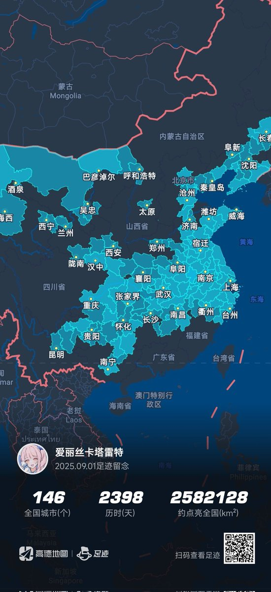

武汉 黄冈 潜江 荆州 恩施 鄂州 仙桃 黄石 杭州 绍兴 舟山 宁波 咸宁 黄山 九江 重庆 岳阳 景德镇 张家界 常德 金华 衢州 南昌 益阳 台州 丽水 上饶 湘西 长沙 温州 抚州 湘潭 株洲 宜春 新余 遵义 铜仁 娄底 怀化 邵阳 毕节 吉安 贵阳 六盘水 黔东南 黔南 安顺 曲靖 桂林 昆明 厦门 柳州 来宾 南宁


我去过的所有中国城市：
哈尔滨 长春 四平 辽源 铁岭 白山 阜新 沈阳 本溪 鞍山 锦州 盘锦 营口 葫芦岛 呼和浩特 巴彦淖尔 包头 丹东 秦皇岛 北京 廊坊 唐山 天津 嘉峪关 酒泉 大连 阿拉善 张掖 沧州 银川 太原 吴忠 武威 德州 中卫 威海 烟台 海西 潍坊 济南 海北 西宁 海东 兰州 泰安 青岛（下续） https://t.co/Ht4zbcrjc5 https://t.co/M4UhBimvEJ
哈尔滨 长春 四平 辽源 铁岭 白山 阜新 沈阳 本溪 鞍山 锦州 盘锦 营口 葫芦岛 呼和浩特 巴彦淖尔 包头 丹东 秦皇岛 北京 廊坊 唐山 天津 嘉峪关 酒泉 大连 阿拉善 张掖 沧州 银川 太原 吴忠 武威 德州 中卫 威海 烟台 海西 潍坊 济南 海北 西宁 海东 兰州 泰安 青岛（下续） https://t.co/Ht4zbcrjc5 https://t.co/M4UhBimvEJ